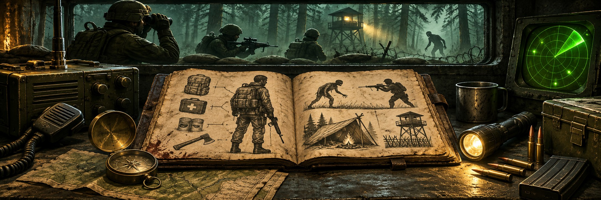

Know the rally plan
Check the target, rally lead, and server time in alliance chat. Keep a teleport available when your group expects to move.
Member tips

Check the target, rally lead, and server time in alliance chat. Keep a teleport available when your group expects to move.
Check adjacent Outposts and open Passes before spending an attempt. Coordinate with same-camp alliances on shared capture windows.
Check crystal holdings before Monday settlement. Confirm the final sites and Passes to hold before the Week 10 lock.